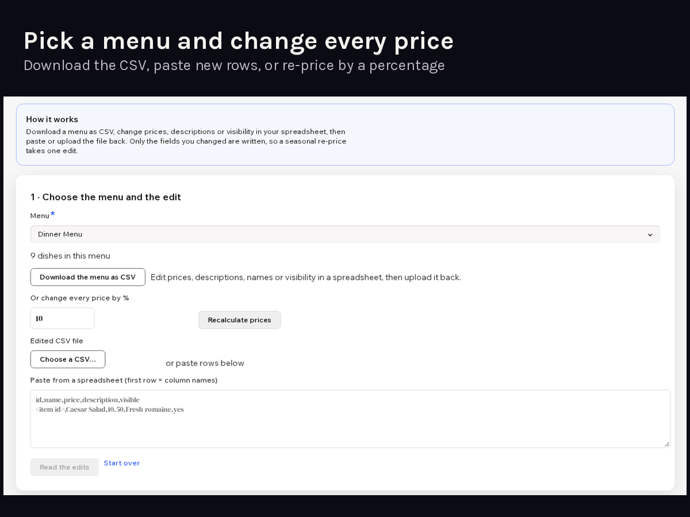

Menu CSV: Bulk Edit Dishes
Re-price and edit menu dishes from a CSV file
- Edit prices, names, descriptions and visibility
- Re-price the whole menu by a percentage
- Download the menu as CSV, edit, upload it back
- Free writes 25 dishes per edit; Premium all rows

What it does
A seasonal menu change means dozens of small edits. A re-price should take one spreadsheet, not an evening of clicking.
Pick a menu, download its dishes as a CSV file and edit the rows in any spreadsheet. Paste the edited rows back, or upload the file. The app matches each row to a dish by its ID, or by its name when there is no ID, and shows every change before anything is written: the old price next to the new one, the description, and whether the dish will be hidden. Rows that name a dish not on the menu stay in the list marked in red, so a typo does not take a dish offline.
When the prices change across the board, skip the file and use the percentage box instead. Enter 10 and every price in the menu goes up by a tenth, with a preview of each dish before the write.
Only the fields you changed are written, one dish at a time, so a rejected row does not undo the rest. A results table and a results CSV show which dishes were updated and which were skipped.
The free plan writes up to 25 dishes per edit and covers one menu, which fits a small update. Premium writes every row in one pass, opens all your menus, and keeps the whole re-price to a single click.
Price
Free
- 25 dishes per edit
- One menu at a time
- Download the menu as CSV
- Percentage re-price
Premium
$5/month, or $4/month billed yearly ($48/year), 14-day free trial
- Unlimited dishes per edit
- Every menu on the site
- Edit prices, names, descriptions, visibility
- Results CSV for every run